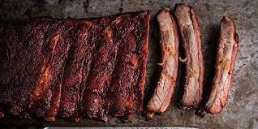

Smoked Ribs

The Recipe
I have been smoking ribs for fun for about 15 years now.
For me, it's a cathartic experience.
One that helps me forget all my ailments
Smoking ribs is a science.
It's as simple as nailing down these essential elements:
temperature, time, salt, and pepper.
Ingredients
- 1 slab of your favorite ribs (I prefer the St. Louis cut)
- Coarse kosher salt (1/4 tsp per pound)
- Fresh, course ground black pepper
- BBQ sauce if you desire (I like to make my own)
Steps
- Preheat smoker to 225. Oak smoke preferred.
- Rinse ribs in cool water and remove any bone bits leftover from the buthering process. Pat dry.
- Remove the membrane from the under side of the meat.
- Trim the ribs to a nice, even shape. Keep the sizeable bits and smoke with the ribs.They make excellent mid-cook meat snacks to keep morale high.
- Season ribs to your liking.
- Smoke for 4-7 hours, depending on your cut
- Do not wrap your ribs, total waste of time and foil.
- About an hour or two in, slather on the sauce (if desired).
- Cook until ready.
- Enjoy! And don't forget about the meat snacks. If they burn, morale will suffer.
Home